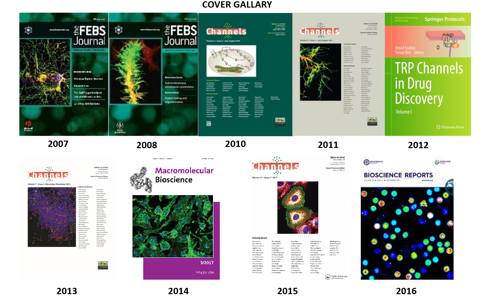

Publications
- Dubey NK, Das NK, Mahapatra P, Mohanta S, Shikha D, Banerjee A, Sahu RP, Acharya TK, Mishra S, Kumar S, Rokade TP, Kumar V, Halder RR, Sing R, Aswin T, Kumar S, Goswami L, Kumar S, Goswami C. (2023) Current understanding of TRP channels and their genomics: Implication in health research, Book chapter (Accepted)
- Shikha D, Mahish C, Sing R, Chattopadhyay S, Goswami C (2023) Modulation of TRPM8 alters the phagocytic activity of microglia and induces changes in sub-cellular organelle functions. Biochem Biophys Res Commun. (Accepted)
- Kumar S, Acharya TK, Halder RR, Chang YT, Mahapatra P, Goswami C. (2023) Menthol causes mitochondrial Ca2+-influx, affects structure-function relationship and cools mitochondria. Life Sciences.
- Panda SK, Sahu RP, Goswami C., Singh AK. (2023) Easily synthesizable molecular probe for the nanomolar level detection of Cd2+ in near aqueous media: Theoretical investigations and live cell imaging. Spectrochimica Acta Part A: Molecular and Biomolecular Spectroscopy. (Accepted)
- Radhakrishnan A; Mukherjee T; Mahish C; Kumar PS; Goswami C. Chattopadhyay S (2023) TRPA1 activation and Hsp90 inhibition synergistically downregulate macrophage activation and inflammatory responses in vitro. BMC Immunology (Accepted)
- Acharya TK, Pal S, Ghosh A, Kumar S, Kumar S, Chattopadhyay N, Goswami C (2023) TRPV4 regulates osteoblast differentiation and mitochondrial function that are relevant for channelopathy. Frontiers in Cell and Developmental Biology (Accepted)
- Dubey, N. K., Mishra, S., & Goswami C. (2023). Progesterone interacts with the mutational hot-spot of TRPV4 and acts as a ligand relevant for fast Ca2+-signalling. Biochimica et Biophysica Acta (BBA)-Biomembranes, 1865(6), 184178.
- Mohapatra A, Kumar S, Acharya K, Goswami C, Bhaumik S. (2023) Highly stable multi-encapsulated red-emitting cesium lead halide nanocrystals for efficient copper ion detection and imaging in live cells. Journal of Alloys and Compounds. 947, 169453
- Kar R, Kumar S; Acharya TK; Goswami C. , Bhaumik S (2023) Highly water-stable and monodisperse double polymer-coated CsPbBr3 nanocrystals for bioimaging application in living cells with better sensitivity. RSC Advances. 13, 5946-5956.
- Acharya TK, Kumar S, Rokade TP, Chang YT, Goswami C. (2023) TRPV4 regulates mitochondrial Ca2+-status and physiology in primary murine T cells based on their immunological state. Life Sciences. 318, 121493.
- Das R, Mohanta S, Dubey NK, Dash N, Goswami C (2023) Human skeletal dysplasia causing L596P-mutant alters the conserved amino acid pattern at the Lipid-Water-Interface of TRPV4. BBA Biomembrane 1865(2): 184085.
- Sahu RP, Goswami C (2023) Presence of TRPV3 in macrophage lysosomes helps in skin wound healing against bacterial infection. Journal of Experimental Dermatology. 32(1):60-74.
- Acharya TK, Kumar A, Kumar S, Goswami C (2022) TRPV4 interacts with MFN2 and facilitates endoplasmic reticulum-mitochondrial contact points for Ca2+-buffering. Life sciences 310: 121112.
- Acharya TK, Kumar A, Majhi RK, Kumar S, Chakraborty R, Tiwari A, Smalla KH, Liu X, Chang YT, Gundelfinger ED, Goswami C (2022) TRPV4 acts as a mitochondrial Ca2+-importer and regulates mitochondrial temperature and metabolism. Mitochondrion. 67: 38-58.
- Swain N, Samanta L, Goswami C, Kar S, Majhi RK, Kumar S, Dixit A. (2022) TRPV1 channel in spermatozoa is a molecular target for ROS mediated sperm dysfunction and differentially expressed in both natural and ART pregnancy failure. Frontiers in Cell and Developmental Biology. 10: 867057.
- Jain A, Sahu R P, Goswami C. (2022) Olmsted syndrome causing point mutants of TRPV3 (G568C and G568D) show defects in intracellular Ca2+ mobilization and induce lysosomal defects. Biochem Biophys Res Commun. 628: 32-39.
- Das R & Goswami C. (2022) Role of TRPV4 in skeletal function and its mutant-mediated skeletal disorders. (Book chapter) TRPV4 Channels in Different Organ Systems. Volume 89, Curr Top Membr. 89: 221-246. doi: 10.1016/bs.ctm.2022.07.004.
- Acharya TK, Sahu RP, Kumar S, Kumar S, Rokade TP, Chakraborty R, Dubey NK, Shikha D, Chawla S, Goswami C (2022) Function and regulation of thermosensitive ion channel TRPV4 in the immune system. (Book chapter) TRPV4 Channels in Different Organ Systems. Volume 89, Curr Top Membr. 89: 155-188.
- Singh A, Kumar S, Acharya TK, Goswami C and Goswami L. (2022) Application of nanohydroxyapatite-polysaccharide based biomaterial for bone cell mineralization in tissue engineering. Materials Today Communications. (Accepted).
- Saha S, Mohanta S, Das R, Dalai R, Divyanshi, Tiwari N, Tiwari A, Kumar A, Goswami C. (2022) Ratio of Hydrophobic-Hydrophilic and Positive-Negative Residues at Lipid-Water-Interface Influences Surface Expression and Channel Gating of TRPV1. J Membr Biol. 255(2-3): 319-339.
- Das R, Kumar A, Dalai R, Goswami C. (2022) Cytochrome C interacts with the pathogenic mutational hotspot region of TRPV4 and forms complexes that differ in mutation and metal ion-sensitive manner. Biochem Biophys Res Commun. 611: 172-178.
- Chakraborty R; Goswami C (2022) Both heat-sensitive TRPV4 and cold-sensitive TRPM8 ion channels regulate microglial activity. Biochem Biophys Res Commun 611: 132-139.
- Chakraborty R, Acharya TK, Tiwari N, Majhi RK, Kumar S, Goswami L, Goswami C (2022) Hydrogel mediated release of TRPV1 modulators to fine-tune Osteoclastogenesis. ACS Omega 7, 9537-9550.
- Kar MR, Chakraborty R, Patel U, Chakraborty R, Ray S, Acharya TK, Goswami C, Bhaumik S (2022) Impact of Zn-doping on the composition, stability, luminescence properties of silica coated all-inorganic cesium lead bromide nanocrystals and their biocompatibility. Materials Today Chemistry. 23, 100753.
- Mahanta S; Prusty M; Sivakumar PS; Mishra D; Sahu R; Goswami C; Chawla S; Goswami L; Elangovan S, Panda SK (2022) Novel Levilactobacillus brevis-based formulation for controlling cell proliferation, cell migration and gut dysbiosis. LWT - Food Science & Technology. 154, 112818.
- Sengupta S, Singh A, Dutta K Sahu RP, Goswami C, Chawla S, Goswami L, Bandyopadhyay A (2021) Branched/Hyperbranched Copolyesters from Poly (vinyl alcohol) And Citric Acid as Delivery Agent and a Tissue Regeneration Scaffold. Macromolecular Chemistry and Physics. 222, 2100134.
- Majhi R, Majhi RK, Garhnayak L, Patro TK, Dhal A, Kumar S, Guha P, Goswami L, Goswami C (2020) Comparative evaluation of surface modified zirconia for growth of bone cells and early osseointegration. The Journal of Prosthetic Dentistry. 126, 92. e1-92. e8.
- Das M, Maity D, Acharya TK, Sau S, Giri C, Goswami C and Mal P. (2021) Lowest Aqueous Picomolar Fluoride Ion Detection by an Aluminum(III) Bind Chemosensor and in vivo Aluminum-Toxicity. Dalton Transactions. 50(8): 3027-3036.
- Acharya TK, Tiwari N, Kumar S, Ghosh A, Tiwari A, Pal S, Majhi RK, Kumar A, Das R, Singh A, Maji PK, Chattopadhyay N, Goswami L, Goswami C. (2021) TRPM8 channel inhibitor-encapsulated CMT:HEMA hydrogel as a tunable surface for bone tissue engineering. Scientific reports. 11(1): 3730.
- Choudhury P, Chawla S, Agarwal S, Singh A, Nayak A, Kumar A, Maji PK, Goswami C, Goswami L. (2020) Modified tamarind kernel polysaccharide-based matrix alters neuro-keratinocyte cross-talk and serves as a suitable scaffold for skin tissue engineering. Materials Science & Engineering C. 121: 111779.
- Yadav C, Chajjed M, Chaudhary P, Sahu RP, Patel A, Chawla S, Goswami L, Goswami C and Maji PK. (2021) Bio-extract amalgamated sodium alginate-cellulose nanofibres based 3D- sponges with interpenetrating bioPU coating as wound care scaffolds. Materials Science & Engineering C. 118:111348.
- Kumar PS, Nayak TK, Mahish C, Sahoo SS, Anukrishna R, De S, Datey A, Sahu RP, Goswami C, Chattopadhyay S, Chattopadhyay S. (2021) Inhibition of Transient Receptor Potential Vanilloid 1 (TRPV1) Channel Regulates Chikungunya Virus Infection in Macrophages. Archived in virology. 166(1): 139-155.
- Acharya TK, Tiwari A, Majhi RK, Goswami C. (2021) Endogenous TRPM8 channel augments T cell activation and proliferation. Cell biology international. 45(1): 198-210.
- Mohanta S and Goswami C (2020) TRP channels at gut: effect of probiotics and phyto-nutraceuticals on gut-brain-immune axis. Book Chapter. Springer.
- Majhi RK, Kumar A, Giri SC, Goswami C. (2020) Differential expression and localization of TRPV channels in the mature sperm of Anas platyrhynchos. Reproduction in domestic animals. 55: 1619-1628.
- 67a Majhi R K, Kumar A, Giri SC, Goswami C. (2020) Differential expression and localization of thermosensitive Transient Receptor Potential Vanilloid (TRPV) channels in the mature sperm of white pekin duck (Anas platyrhynchos). bioRxiv: (Preprint) https://www.biorxiv.org/content/10.1101/2020.02.10.941732v1
- Chattopadhyay NR, Chatterjee K, Tiwari N, Chakrabarti S, Sahu SK, Roy SD, Ghosh A, Reddy RR, Das P, Mal S, Karnar BB, Das AK, Tsering S, Riba K, Puii Z, Zomawia E, Singh YI, Suryawanshi AR, Kumar A, Ganguly D, Goswami C, Choudhuri T. (2020) TLR9 polymorphisms might contribute to the ethnicity bias for EBV-infected Nasopharyngeal Carcinoma. iScience 23: 100937.
- Yadav M, Goswami C (2020) TRPV2 interacts with actin and reorganizes submembranous actin cytoskeleton. Bioscience Reports. 40(10): BSR20200118.
- Parveen A, Kumar R, Tandon R, Khurana S, Goswami C, Kumar A. (2020) Mutational hotspots of HSP47 and its potential role in cancer and bone-disorders. Genomics 112: 552-566.
- Yadav M, Goswami C (2019) TRPV2 activation reorganizes actin cytoskeleton, induces neurite initiation and branching by altering cAMP levels. bioRxiv
- Kumar S, Majhi RK, Singh A, Mishra M, Chawla S, Tiwari A, Guha P, Satpati B, Mohapatra H, Goswami L, Goswami C (2019) Carbohydrate-coated Gold-Silver nanoparticles for efficient elimination of multi drug resistant bacteria and in vivo wound healing. ACS-Applied materials and interfaces 11(46), 42998-43017
- Das R, Goswami C (2019) TRPV4 expresses in bone cell lineages and TRPV4-R616Q mutant causing Brachyolmia in human reveals “loss-of-interaction” with cholesterol. Biochemical and Biophysical Research Communications 517: 566-574.
- Saha S, Sucharita S, Majhi RK, Tiwari A, Ghosh A, Pradhan SK, Patra BK, Dash RR, Nayak RN, Giri SC, Routray P, Kumar A, Kumar GP, Goswami C (2019) TRPA1 is selected as a semi-conserved channel during vertebrate evolution due to its involvement in spermatogenesis. Biochemical and Biophysical Research Communications 512: 295-302.
- Yadav M, Saha S, Kumar A, Goswami C (2019) Plant and natural products as modulators of TRP channels. Biological Research & Reviews., 1–13
- Behera S., Mishra P.C., Ghosh S., Goswami C. Mallick B. (2019) Microscopic Observation of Acid Rain Induced Bacopa monnieri L. Microscopy Research, 7, 11-25.
- * Sahoo SS, Majhi RK, Tiwari A, Acharya TK, Kumar PS, Saha S, Goswami C, Chattopadhyay S (2019) Transient Receptor Potential Ankyrin1 channel is endogenously expressed in T cells and regulates immune functions. Bioscience Reports; 39(9). pii: BSR20191437. (* = Cover page)
- 57a Sahoo SS, Majhi RK, Tiwari A, Acharya TK, Kumar PS, Saha S, Goswami C, Chattopadhyay S (2018) Transient Receptor Potential Ankyrin1 channel is endogenously expressed in T cells and regulates immune functions. bioRxiv (Preprint)
- Parveen, A.; Kumar, R.; Tandon, R.; Khurana, S.; Goswami, C.; Kumar, A. Mutational Hotspots and Protein Interactome Analyses of Collagen-Specific Chaperone-HSP47. Preprints 2018, 2018110280. https://doi.org/10.20944/preprints201811.0280.v1
- ?. A Kumar, RK Majhi, TK Acharya, KH Smalla, ED Gundelfinger, Goswami C. (2018) TRPV4 interacts with mitochondrial proteins and acts as a mitochondrial structure-function regulator, BioRxiv, 330993 (? =Appeared in Charcot-Marie-Tooth News: https://charcot-marie-toothnews.com/2018/06/08/trpv4-channels-linked-to-cmt2c-regulate-structure-and-function-of-mitochondria-study-reports/)
- Majhi RK, Maity A, Senapati MR, Behera PC, Mandal AK, Giri SC, Goswami C-. 2018. Endogenous expression of thermo-sensitive ion channels TRPV1 and TRPV4 in immune tissues of avian species (duck, Anas platyrhynchos) PeerJ Preprints 6:e26614v1 https://doi.org/10.7287/peerj.preprints.26614v1
- Kumar S, Singh U, Singh O, Goswami C, Singru PS (2018) Transient receptor potential vanilloid 1-6 (TRPV1-6) gene expression in the mouse brain during the estrous cycle. Brain Research, 1701: 161-170.
- Mishra M, Kumar S, Majhi R K, Goswami L, Goswami C, Mohapatra H (2018). Antibacterial efficacy of polysaccharide-capped silver nanoparticles is not affected by AcrAB-TolC efflux pump. Frontiers in Microbiology. 9, 823.
- Choudhury P, Kumar S, Singh A, Kumar A, Kaur N, Sanyasi S, Chawla S, Goswami C, Goswami L (2018) Hydroxyethyl methacrylate grafted carboxy methyl tamarind (CMT-g-HEMA) polysaccharide-based matrix as a suitable scaffold for skin tissue engineering. Carbohydrate Polymers. 189, 87-98.
- Kumar S, Majhi RK, Sanyasi S, Goswami C, Goswami L (2018) Acrylic acid grafted tamarind kernel polysaccharide-based hydrogel for bone tissue engineering in the absence of any osteoinducing factors. Connective Tissue Research 59, 111-121.
- Schoville SD, Chen YH, Andersson MN, Benoit JB, Bhandari A, Bowsher JH, Brevik K, Cappelle K, Chen MJM, Childers AK, Childers C, Christiaens O, Clements J, Didion EM, Elpidina EN, Engsontia P, Friedrich M, García-Robles I, Gibbs RA, Goswami C, Grapputo A, Gruden K, Grynberg M, Henrissat B, Jennings EC, Jones JW, Kalsi M, Khan SA, Kumar A, Li F, Lombard V, Ma X, Martynov A, Miller NJ, Mitchell RF, Munoz-Torres M, Muszewska A, Oppert B, Palli SR, Panfilio KA, Pauchet Y, Perkin LC, Petek M, Poelchau MF, Record E, Rinehart JP, Robertson HM, Rosendale AJ, Ruiz-Arroyo VM, Smagghe G, Szendrei Z, Thomas GWC, Torson AS, Jentzsch IMV, Weirauch MT, Yates AD, Yocum GD, Yoon JS, Richards S (2018) A model species for agricultural pest genomics: the genome of the Colorado potato beetle, Leptinotarsa decemlineata (Coleoptera: Chrysomelidae). Scientific Reports 8, 1931.
- Saha S, Ghosh A, Tiwari N, Kumar A, Kumar A, Goswami C (2017) Preferential selection of Arginine at the lipid-water-interface of TRPV1 during vertebrate evolution correlates with its snorkeling behavior and cholesterol interaction. Scientific reports 7, 16808.
- Kumar A, Bhandari A; Sarde SJ, Goswami C (2017) Ancestry & molecular evolutionary analyses of heat-shock protein 47 kDa (HSP47/SERPINH1) Scientific reports 7, 10394.
- Kumar S, Singh U, Goswami C, Singru PS (2017) Transient receptor potential vanilloid 5 (TRPV5), a highly Ca2+-selective TRP channel in the rat brain: relevance to neuroendocrine regulation. Journal of Neuroendocrinology 29, 4.
- Kumar S, Singh U, Singh O, Goswami C, Singru PS (2017) Transient receptor potential vanilloid 6 (TRPV6) in the mouse brain: Distribution and estrous cycle-related changes in the hypothalamus. Neuroscience 344, 204-216.
- Yadav M, Goswami C (2017) TRPV3 mutants causing Olmsted Syndrome induce impaired cell adhesion and nonfunctional lysosomes. Channels 11, 196-208. (* = Cover page)
- Sanyasi S, Kumar S, Ghosh A, Majhi RK, Kaur N, Choudhury P, Singh UP, Goswami C, Goswami L. (2017) A modified polysaccharide-based hydrogel for enhanced osteogenic maturation and mineralization independent of differentiation factors. Macromolecular Bioscience 17, 3. (* = Cover page)
- Ghosh A, Kaur N, Kumar A, Goswami C (2016) Why individual thermo sensation and pain perception varies? Clue of disruptive mutations in TRPVs from 2504 human genome data. Channels 10, 339-345.
- Singh U, Kumar S, Shelkar G, Yadav M, Kokare D, Goswami C, Lechan R, Singru P (2016) Transient receptor potential vanilloid (TRPV3) in the ventral tegmental area of rat: role in modulation of the mesolimbic-dopamine reward pathway. Neuropharmacology 110, 198-210.
- Sanyasi S, Majhi RK, Kumar S, Mishra M, Ghosh A, Suar M, Satyam PV, Mohapatra H, Goswami C, Goswami L. (2016) Carboxy Methyl Tamarind Polysaccharide-capped silver Nanoparticles (AgNP) inhibit biofilm formation by blocking FtsZ-FtsA complex-mediated microbial cell division. Scientific reports 6, 24929.
- Kumar A, Majhi RK, Swain N, Giri SC, Kar S, Samanta L, Goswami C (2016) TRPV4 is endogenously expressed in vertebrate spermatozoa and regulates intracellular calcium in human sperm. Biochemical and Biophysical Research Communications. 473, 781-8.
- Das JK, Mahapatra R, Patro S, Goswami C, Suar M. (2016) Lactobacillus acidophilus binds to MUC3 component of cultured intestinal epithelial cells with the highest affinity. FEMS Microbiology Letters 363, 8.
- Mohanty G, Swain N, Goswami C, Kar S, Samanta L (2016) Histone retention, protein carbonylation, and lipid peroxidation in spermatozoa: Possible role in recurrent pregnancy loss. Systems Biology in Reproductive Medicine 62, 201-12.
- Majhi RK, Kumar A, Yadav M, Kumar P, Maity A, Giri SC, Goswami C (2016) Light and electron microscopic study of mature spermatozoa from white pekin duck (Anas platyrhynchos): An ultra-structural and molecular analysis. Andrology 4, 232-44.
- Majhi RK, Saha S, Kumar A, Ghosh A, Swain N, Goswami L, Mohapatra PP, Maity A, Sahoo V, Kumar A, Goswami C (2015) Expression of temperature-sensitive ion channel TRPM8 in sperm cells correlates with vertebrate evolution. PeerJ. 3: e1310.
- Majhi RK, Sahoo SS, Yadav M, Chattopadhyay S, Goswami C (2015) Functional Expression of TRPV Channels in T cells and their implications in immune regulation. The FEBS Journal. 282, 2661-81.
- Kumari S, Kumar A, Sardar P, Yadav M, Majhi RK, Kumar A, Goswami C (2015) Influence of membrane cholesterol in the molecular evolution and functional regulation of TRPV4. Biochemical and Biophysical Research Communications 456, 312-9.
- Rath S, Das L, Kokate S.B, Chattopadhyay S, Goswami C, Chattopadhyay R, Crowe S.E., Bhattacharyya A (2015) Regulation of Noxa-mediated apoptosis in Helicobacter pylori-infected gastric epithelial cells. FASEB J 29, 796-806.
- Kumar A, Kumari S, Majhi RK, Swain N, Yadav M, Goswami C. (2015) Regulation of TRP channels by steroids: Implications in physiology and diseases. General and Comparative Endocrinology S0016-6480(14)00398-0.
- Kumar A, Bhandari A, Goswami C (2014) Surveying genetic variants and molecular phylogeny of cerebral cavernous malformation gene, CCM3/PDCD10. Biochemical and Biophysical Research Communications 455, 98-106.
- Kumar A, Sahu SK, Mohanty S, Chakrabarti S, Maji S, Reddy RR, Jha AK, Goswami C, Kundu CN, Rajasubramaniam S, Verma SC, Choudhuri T. (2014) Kaposi Sarcoma Herpes Virus Latency Associated Nuclear Antigen Protein Release the G2/M Cell Cycle Blocks by Modulating ATM/ATR Mediated Checkpoint Pathway. PLoS One. 9(6): e100228.
- Kumar A, Bhandari A, Sarde SJ and Goswami C. (2014) Molecular phylogeny of C1 inhibitor depicts two immunoglobulin-like domains fusion in fishes and ray-finned fishes specific intron insertion after separation from zebrafish. Biochemical and Biophysical Research Communications. 450, 219-26.
- Kumar A, Bhandari A, Sarde SJ, Goswami C. (2014) Sequence, synteny, phylogeny and variants analyses of heparin cofactor II. Immunobiology 219, 713-28.
- Pradhan N, Pratheek BM, Garai A, Kumar A, Meena VS, Ghosh S, Singh S, Kumari S, Chandrashekar TK, Goswami C, Chattopadhyay S, Kar S, Maiti PK. (2014) Induction of apoptosis by Fe(salen)Cl through caspase-dependent pathway specifically in tumor cells. Cell biology international 38, 1118-31.
- Pati R, Mehta R, Mohanty S, Padhi A, Sengupta M, Baskarlingam V, Goswami C, Sonawane A. (2014) Topical application of zinc oxide nanoparticles reduce bacterial skin infection in mice and exhibit antibacterial activity by inducing oxidative stress response and cell membrane disintegration in macrophages. Nanomedicine S1549-9634(14)00114-2.
- Sanyasi S, Kumar A, Goswami C, Bandyopadhyay A, Goswami L (2014) A carboxy methyl tamarind polysaccharide matrix for adhesion and growth of osteoclast-precursor cells. Carbohydrate Polymers, 101, 1033-1042.
- Kumar A, Bhandari A, Sarde SJ, Goswami C. (2013) Sequence, phylogenetic and variant analyses of Antithrombin III. Biochemical and Biophysical Research Communications. 440, 714-24
- Majhi R K, Kumar A, Yadav M, Swain N, Kumari S, Saha A, Pradhan A, Goswami L, Saha S, Samanta L, Maity A, Nayak TK, Chattopadhyay S, Rajakuberan C, Kumar A, Goswami C. (2013) Thermosensitive ion channel TRPV1 is endogenously expressed in the sperm of a freshwater teleost fish (Labeo rohita) and regulates sperm motility. Channels 7, 1-10
- Kumar A, Majhi R, Yadav M, Szallasi A, Goswami C. (2013) TRPV1 activators (“vanilloids”) as neurotoxins. Book chapter (Springer)
- Kumar A, Goswami L, Goswami C (2013) Importance of TRP channels in pain: implications for stress. Frontiers in Bioscience. (Schol Ed) 5, 19-38
- Goswami C (2012) TRPs-mediated cytoskeletal reorganization: implications for disease and drug development. Book chapter (Springer) ISBN: 978-1-62703-076-2. 13-39
- Goswami C (2012) TRPV1-tubulin complex: involvement of membrane tubulin in the regulation of chemotherapy-induced peripheral neuropathy. J Neurochem. 123, 1-13
- Kumar A, Bhandari A, Sinha R, Sardar P, Sushma, Goyal P, Goswami C, and Grapputo A. (2012) Molecular phylogeny of OVOL genes illustrates a conserved C2H2 zinc finger domain coupled by hypervariable unstructured regions. PlosOne 7, e39399
- Sardar P, Kumar A, Bhandari A, Goswami C. (2012) Conservation of tubulin-binding sequences in TRPV1 throughout evolution. PlosOne 7, e31448
- Majhi R, Sardar P, Goswami L, Goswami C. (2011) Right time - right location - right move: TRPs find motors for common functions. Channels (Austin). 5. 375-381
- Goswami C, Kuhn J, Dina OA, Fernandez-Ballester G, Levine JD, Ferrer-Montiel A, Hucho T. (2011) Estrogen destabilizes microtubules through an ion-conductivity independent TRPV1 pathway. J Neurochem. 117, 995-1008
- Goswami C (2010) Structural and functional regulation of growth cone, filopodia and synaptic sites by TRPV1. Journal of Communicative & Integrative Biology 3, 614-618
- Verma P, Kumar A, Goswami C. (2010) TRPV4-mediated channelopathies. Channels (Austin). 4, 319-328
- Goswami C, Goswami L. (2010) Filamentous microtubules in the neuronal spinous process and the role of microtubule regulatory drugs in neuropathic pain. Neurochem Int. 57, 497-503
- Goswami C, Kuhn J, Heppenstall PA, Hucho T. (2010) Importance of non-selective cation channel TRPV4 interaction with cytoskeleton and their reciprocal regulations in cultured cells. PLOS one. 5 e11654
- Goswami C, Rademacher N, Smalla KH, Kalscheuer V, Ropers HH, Gundelfinger ED, Hucho T. (2010) TRPV1 acts as a synaptic protein and regulates vesicle recycling. J Cell Sci. 123, 2045-57.
- Goswami C, Islam MS. (2010) Transient Receptor Potential channels: What's happening? Reflections in the wake of the 2009 TRP Meeting, Karolinska Institutet, Stockholm. Channels (Austin). 4, 124-35
- Kuhn J, Dina Y, Goswami C., Suckow V, Levine J, Tim Hucho. (2008) GPR30 Estrogen Receptor Agonists Induce Mechanical Hyperalgesia in the Rat. European journal of neuroscience. 27, 1700-9.
- Goswami C. and Hucho T. (2008) Submembraneous microtubule cytoskeleton: Biochemical and functional interplay of TRP channels with the cytoskeleton. FEBS journal. 275, 4684-4699. (Invited review)
- Goswami C. and Hucho T. (2008) Invited review series: Novel aspects of the submembraneous microtubule cytoskeleton. FEBS journal. 275, 4653. (Invited review)
- Goswami C. and Hucho T. (2007) TRPV1 expression-dependent initiation and regulation of filopodial. J Neurochem. 103, 1319-33.
- M. Motazacker, B. Rost, T. Hucho, M. Garshasbi, K. Kahrizi, R. Ullmann, S. Abedini, S. Nieh, S. Amini, Goswami C., A. Tzschach, L. Jensen, D. Schmitz, H.H. Ropers, H. Najmabadi, A.W. Kuss A (2007) Defect in the Ionotropic Glutamate Receptor 6 Gene (GRIK2) is Associated with Autosomal Recessive Mental Retardation. American Journal of Human Genetics 81, 792-8.
- Goswami C., Hucho T. and Hucho F. (2007) Identification and characterisation of novel tubulin-binding motifs located within the C-terminus of TRPV1. J Neurochem. 101, 250-262.
- Goswami C., Schmidt H. and Hucho F. (2007) Regulation of growth cone morphology and movement by TRPV1 activation. FEBS journal. 274, 760-72. (Cover page)
- Goswami C., Dreger M., Otto H., Schwappach B. and Hucho F. (2006) Rapid disassembly of dynamic microtubules upon activation of the capsaicin receptor TRPV1. J Neurochem. 96, 254-266.
- Goswami C., Dreger M., Jahnel R., Bogen O., Gillen C. and Hucho F. (2004) Identification and characterization of a Ca2+-sensitive interaction of the vanilloid receptor TRPV1 with tubulin. J Neurochem. 91, 1092-103.